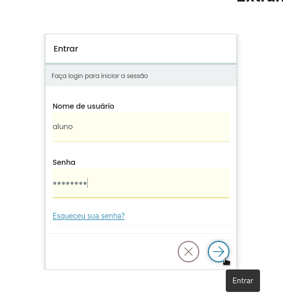

Autenticação no portal do volto na cmc
Contents
Autenticação no portal do volto na cmc#
A autenticação no portal Volto.
Formulário de login padrão#
Ao clicar no ítem de menu Entrar o formulário de login padrão do Plone é exibido com os campos usuário e senha em branco em instalações padrão. Para o portal da extranet usaremos o sistema de autenticação única da Câmara de Curitiba.
{kind=link}
Formulário de login da autenticação única da Câmara de Curitiba#
Ao clicar no ítem de menu Entrar o formulário de login de autenticação única da Câmara de Curitiba será apresentado para a extranet com os campos usuário e senha em branco.
{kind=link}
Botão entrar do formulário de login#
Após preencher o formulário com o usuário e senha basta clicar no botão com a seta para a direita para enviar os dados do formulário para o portal.
{kind=link}
Botão entrar do formulário de login de autenticação única#
Preencher o formulário de autenticação única da Câmara de Curitiba com o usuário e senha. Então basta clicar no botão enviar e submeter os dados do formulário para o sistema de autenticação única da Câmara de Curitiba.
{kind=link}
Autenticação bem sucedida#
Após a autenticação bem sucedida o ítem de menu Entrar não é mais exibido. É apresentada a barra de ações com as funcionalidades que o usuário tem acesso.
{kind=link}
{kind=link}
{kind=link}